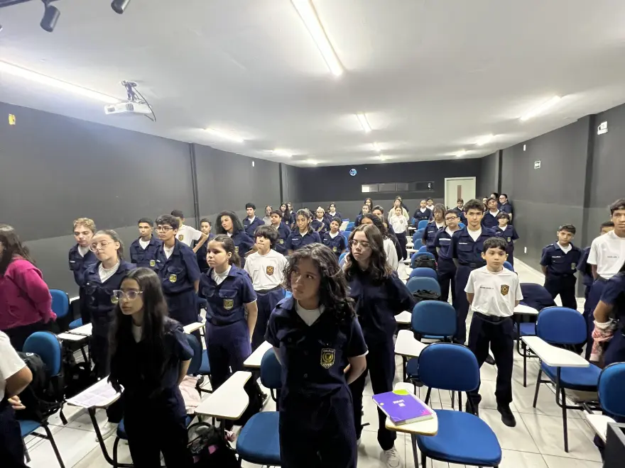
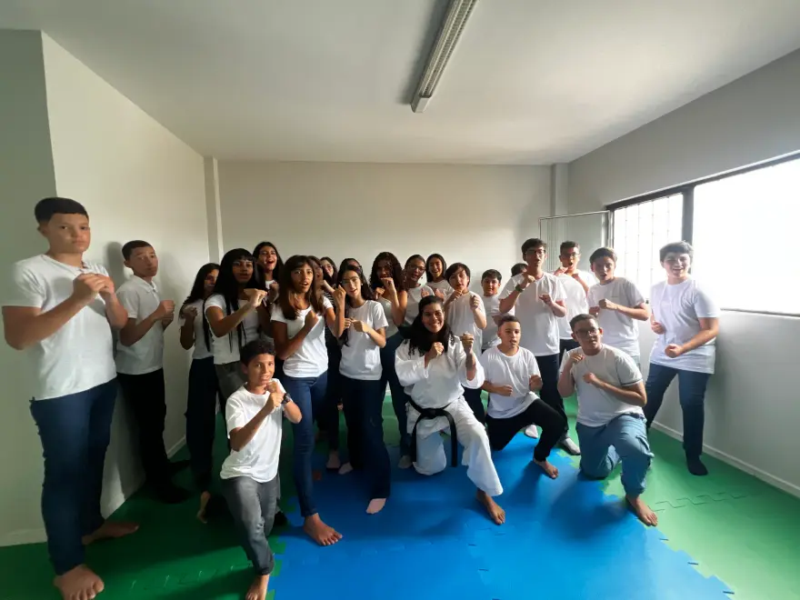
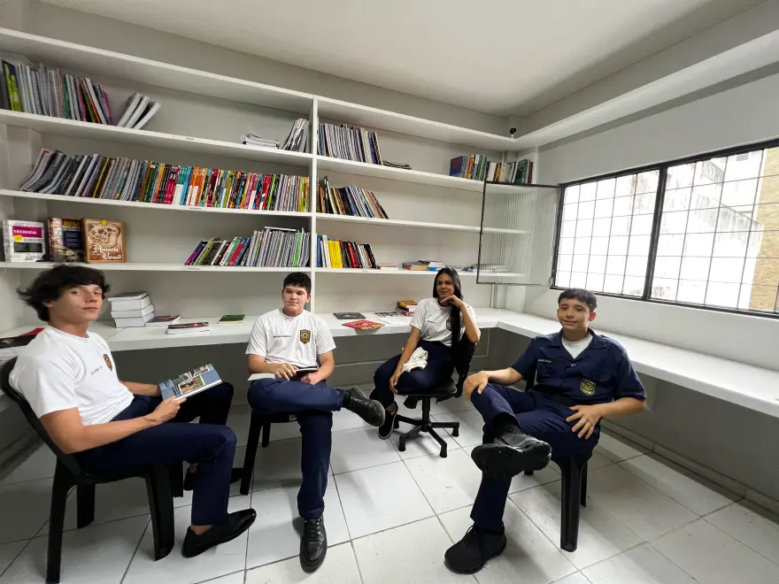
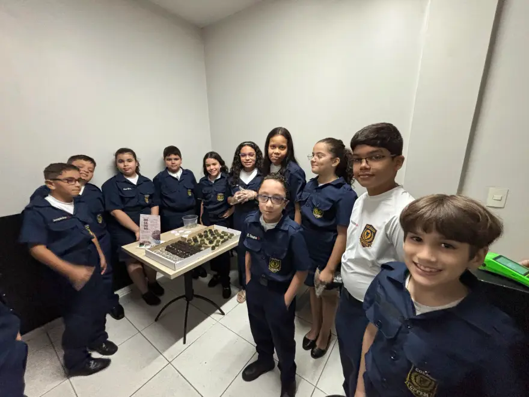
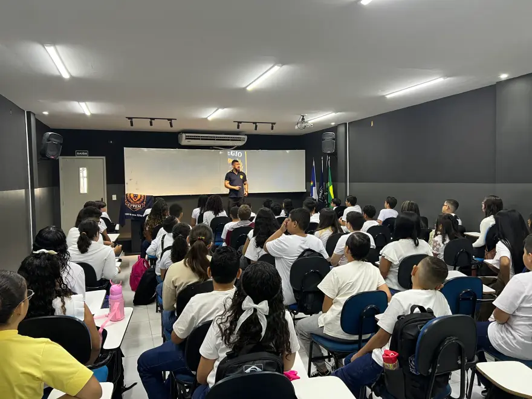

Bronze
- R$ 100,00 de desconto na primeira mensalidade
Programa de indicação · Colégio CPPEM
Você viu a mudança em casa. Na postura, na rotina, no jeito de responder. Quando perguntam onde seu filho estuda, você responde com orgulho. Agora cada família que entrar pela sua indicação também vira desconto e fardamento para você.
Recebemos. Nossa equipe já vai falar com a família. Quando a matrícula for confirmada, essa indicação entra no seu placar.
Como participar
Seu nome, seu WhatsApp e o contato do responsável. Só isso.
A gente liga, tira as dúvidas da família e mostra a escola por dentro.
Assinou a matrícula, sua indicação entra no placar.
A secretaria confere o seu nível e chama você para receber.
Missão Indicação
Só entra no placar quem matricula de verdade. A secretaria confere o seu nível na hora em que a matrícula é confirmada.
Quem entra pela sua indicação já chega com desconto. Você não está pedindo favor a ninguém. Está levando uma condição que a família não teria sozinha.
Depois do Ouro não para. Cada nova família que você trouxer e que matricular vale mais R$ 100,00 de desconto na sua mensalidade. Sem teto, sem pegadinha.
O que você está indicando
Oração antes da aula, continência no pátio, fardamento impecável. Do 1º ano do Fundamental ao 3º do Médio, no centro de Caruaru. É isto que a família que você indicar vai encontrar, e é por isso que você indica sem medo de se comprometer.





Disciplina, fé e excelência acadêmica no mesmo lugar. Manda o Instagram da escola para quem você vai indicar. Ver o dia a dia convence mais que qualquer explicação sua.
Ver o @colegiocppem Fazer minha indicaçãoRegras
A indicação entra no placar depois que a família indicada efetivamente matricula.
A conferência é feita no momento da confirmação da matrícula. Em caso de dúvida, fale com a secretaria.
Benefícios e critérios podem ser ajustados conforme a campanha em vigor.